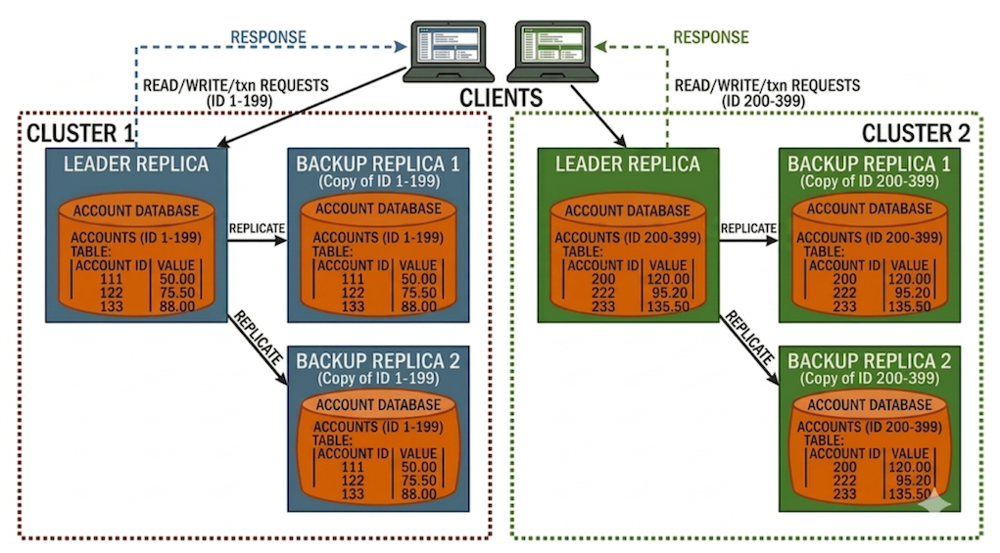

Developed a scalable fault-tolerant Multi-Paxos based distributed transaction processing system supporting money transfers and account balance reads. Data was sharded between multiple clusters and cross shard transactions were handled with the 2 Phase Commit protocol.
Each node lives on its own seperate process and communicates with other nodes using gRPC. The system is designed to handle node failures gracefully using the Multi-Paxos consensus algorithm to ensure consistency across replicas. Transactions are processed asynchronously to maximize throughput, and a benchmarking suite was developed to evaluate system performance under various workloads.
Was able to process 3000 transactions per second on a cluster of 5 nodes. The benchmarking system allows users to generate workloads with different cross-shard transaction percentages, read/write ratios and workload distributions. Additionally hypergraph partitioning was implemented to re-shard data members to minimize cross-shard transactions.
This project is a fault-tolerant distributed transaction processing system for money transfers and account balance reads. It combines Multi-Paxos-based consensus for replica consistency, sharding for horizontal scale, and asynchronous gRPC messaging for for high throughput, cross-procesess/server communication. The result is a system that remains consistent under failures while processing thousands of transactions per second.

Account data is partitioned across multiple shards, where each shard is replicated for fault tolerance. Within each shard, a Multi-Paxos leader coordinates log replication so all replicas apply transactions in the same order. Client requests are routed to the responsible shard(s), and each node runs in its own process while communicating through gRPC.
The design also includes workload-aware resharding with hypergraph partitioning, which places highly related accounts together to reduce cross-shard traffic. A dedicated benchmarking suite measures throughput and latency under different read/write ratios, skewed workloads, and cross-shard percentages.
When a transaction touches accounts in different shards, the system uses 2 Phase Commit (2PC) to preserve atomicity across shards. Basically, you don't want the execution to be executed on one shard and then be aborted by the other, which would lead to an inconsistent state where one shard has applied the transaction while the other has not.
Phase 1 - Prepare: The coordinator asks each participant shard to validate and lock the transaction state. Each shard replicates its prepare decision through its local Multi-Paxos log before replying READY or ABORT.
Phase 2 - Commit/Abort: If all shards respond READY, the coordinator broadcasts COMMIT; otherwise it broadcasts ABORT. Each shard replicates and applies the final decision, then releases locks. This guarantees that either all shard updates are applied or none are.
To further optimize performance, hypergraph partitioning is used during resharding. This approach groups strongly connected accounts based on observed transaction patterns, reducing the number of cross-shard transactions and lowering coordination overhead.
The benchmarking suite allows users to generate workloads with different read/write ratios, workload distributions, and cross-shard transaction percentages. It supports both skewed and uniform access patterns, making it easier to evaluate throughput and latency under realistic operating conditions.